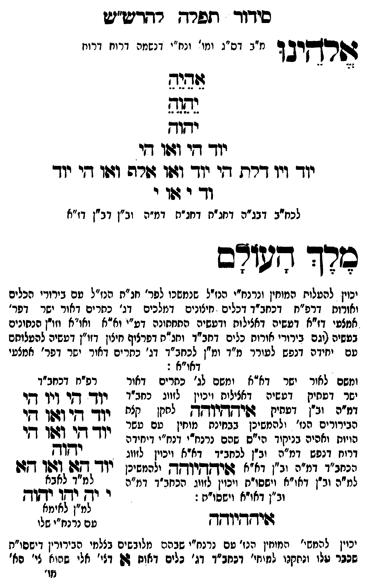

Neue Klartextfassung
אלהינו [מ"ב דס"ג ומי' ונח"י דנשמה דרוח דרוח] אֵהֵיֵהֵ יֵהֵוֵהֵ יהוה יוד הי ואו הי יוד ויו דלת הי יוד ואו אלף ואו הי יוד וד י או י [לכח"ב דבג"ה דחג"ת דחג"ת דמ"ה וב"ן דב"ן דז"א] מלך העולם [יכוין להעלות המוחין ונרנח"י הנז"ל שנמשכו לפר' חג"ת הנז"ל עם בירורי הכלים ואורות דרפ"ח דכחב"ד דכלים חיצונים דמלכים דג' כתרים דאור ישר דפר' אמצעי דז"א דעשיה דכללות ורביעיה התחתונה דע"י וא"א ואו"א וזו"ן הנתונים בעשיה (וגם בירורי אורות וכלים דכחב"ד ונה"ם דפרצוף חיצון דזו"ן דעשיה להעלותם עם יחידה דנפש לעורר מ"ד ומ"ן לכחב"ד דג' כתרים דאור ישר דפר' אמצעי דאו"א):] [ומשם לאור ישר דא"א ומשם לג' כתרים דאור ישר דעתיק דעשיה דכללות ויכוין לזווג כחב"ד דמ"ה וב"ן דעתיק איההיוהה לתקן כלם הבירורים הנז' ולהמשיכן כבחינת מוחין עם עשר הויות וחלפי' בניקוד כ"ס שהם נרנח"י ורנח"י דיחידה דרוח דנפש דמ"ה וב"ן לכחב"ד דא"א ויכוין לזווג הכחב"ד דמ"ה וב"ן דא"א איההיוהה ולהמשיכן למ"ה וב"ן דאו"א וישסו"ת ויכוין לזווג הכחב"ד דמ"ה וב"ן דאו"א וישסו"ת:] === טבלה === [טור שמאל — רפ"ח דכחב"ד] יוד הי ויו הי יוד הי ואו הי יוד הי ואו הי יהוה יוד הא ואו הא [למ"ד לאבא] י יה יהו יהוה [למ"ן לאימא עם נרנח"י שלו] === סוף טבלה === איההיוהה [יכוין להמשי' המוחין הנז' עם נרנח"י שבהם מלובשים בצלמי הבירורין דישסו"ת שכבר עלו ונתקנו לתוך כחב"ד דג' כלים האות א' דג' כלי הארה לג' מו' דיצו' עם טל' דנה"י דפרצוף ג' הכתרים דג' פר' חיצון אמצעי ופני' דפרצוף אמצעי דז"א דעשי' דכללות ורביעיה התחתונה דאבי"ע ולהמשיך להם ג' מקי' מבחי' ל"ם דב"ן:[?]]
Original gegen neue OCR · Niqqud für Vergleich ausgeblendet
Original
אלהינו [מ"בK029-001 דס"ג ומי'K029-002 ונח"י דנשמה דרוח דרוח] אהיה יהוה יהוהK029-003 יוד הי ואו הי יודK029-004 ויו דלת הי יוד ואו אלף ואו הי יוד ודK029-005 י או י [לכח"בK029-006 דבג"ה דחג"ת דחג"תK029-007 דמ"ה וב"ן דב"ן דז"א] מלך העולם [יכוין להעלותK029-008 המוחין ונרנח"יK029-009 הנז"ל שנמשכו לפר' חג"ת הנז"ל עםK029-010 בירורי הכלים ואורות דרפ"ח דכחב"ד דכלים חיצונים דמלכים דג' כתרים דאור ישר דפר' אמצעי דז"א דעשיה דכללות ורביעיה התחתונהK029-011 דע"י וא"א ואו"א וזו"ן הנתונים בעשיה (וגםK029-012 בירורי אורות וכלים דכחב"ד ונה"ם דפרצוף חיצוןK029-013 דזו"ן דעשיה להעלותםK029-014 עם יחידה דנפש לעורר מ"ד ומ"ן לכחב"ד דג' כתריםK029-015 דאור ישר דפר' אמצעי דאו"א):] [ומשםK029-016 לאור ישר דא"א ומשם לג' כתריםK029-017 דאור ישר דעתיקK029-018 דעשיה דכללותK029-019 ויכוין לזווג כחב"ד דמ"ה וב"ן דעתיק איההיוהה לתקן כלםK029-020 הבירורים הנז' ולהמשיכן כבחינתK029-021 מוחין עם עשר ∅K029-022 הויות וחלפי'K029-023 בניקוד כ"סK029-024 שהם נרנח"י ורנח"יK029-025 דיחידה דרוח דנפש דמ"ה וב"ן לכחב"ד דא"א ויכוין לזווג הכחב"ד דמ"ה וב"ן דא"א איההיוהה ולהמשיכןK029-026 למ"ה וב"ן דאו"א וישסו"ת ויכוין לזווג הכחב"ד דמ"הK029-027 וב"ן דאו"א וישסו"ת:] === טבלה === [טור שמאל — רפ"ח דכחב"ד] יוד הי ויו הי יוד הי ואו הי יוד הי ואו הי יהוה יוד הא ואו הא [למ"ד לאבא]K029-028 י יה יהו יהוה [למ"ןK029-029 לאימא עם נרנח"י שלו] === סוף טבלה === איההיוהה [יכויןK029-030 להמשי' המוחין הנז' עםK029-031 נרנח"י שבהם מלובשים בצלמי הבירורין דישסו"ת שכבר עלו ונתקנו לתוך כחב"דK029-032 דג' כלים האות א' דג' כלי הארה לג' מו' דיצו' עם טל' דנה"י דפרצוף ג' הכתרים דג' פר' חיצון אמצעי ופני' דפרצוף אמצעי דז"א דעשי' דכללות ורביעיה התחתונה דאבי"ע ולהמשיך להם ג' מקי' מבחי' ל"ם דב"ן:]K029-033
OCR · fehlbar
סידוד תפרח רתריש"ש רקרב ד נ"בK029-001 דס"ג ומו'K029-002 ונח"י דנשמה דרונז דרווז שרח גנה ידזץK029-003 יוד די וזו די יוךK029-004 ויו דרת גי יוך ועו שרה ושו די יוך וךך ר פךK029-005 י לכחיבK029-006 דבג"ה דחג"ח דחג"חK029-007 דמ"ה וב"ן דב"ן דז"א מרד -פורב 7 9 7 7 יכוין להעלוחK029-008 המוחין ונרנחי"יןK029-009 הנז"ל שנמשכו לפר' חג"ת הנז"ל טםK029-010 בירורי הכלים ואורות דרפ"ח דכחב"ד דכלים חיצונים דמלכים דג' כתרים דאור ישר דפר' אמצעי דז"א דעשיה דאצילות ודעשיה התחחונהK029-011 דע"י וא"א ואו"א וזו"ן הנחונים בטשיה וגםK029-012 בירורי אורוח כלים דחב"ד וחג"ת דפרציף חיציןK029-013 דזו"ן דעשיה להעלוחםK029-014 עם יחידה דנפש לעורר מ"ד ומ"ן לכחב"ד דג' כשריםK029-015 דאור ישר דפר' אמצעי ל דאו"א : ומשםK029-016 לאור ישר דא"א ומשם לג' כחריםK029-017 דאור רפ"ח דכחב"ד א פללK029-018 דעשיה דאצילוחK029-019 ויכוין לזווג כחב"ד ו' דזר יך דקר זזזק זב". דבקי. זויחדיודר לח. נ"ח יוך גדי ושן חיK029-020 הבירורים הנז' ולהמשיכן בבחינחK029-021 מוחין עם עשר יוך דזי ושו דיK029-022 הויות ואהיהK029-023 בניקוד הי"יסK029-024 שהם נרנח"י דנח"יK029-025 דיחידה ל ז ורי דנפש' צ"ש יב"ץ למזדד' דצא זכין לי. - 22 נעזנ"ד (דמ"ף (נ"ן וצא זפידקךיודד ליבן יוד או גאו דזוK029-026 למ"ה וב"ן דאו"א וישסו"ח וזאין לזיזנ' הצחב"ד דמ"נ - 223 לאבלK029-027 וב"ן דאויא וישסו"ת:K029-028 י יך יקו יתיך (-- . למ"ןK029-029 לאימא דפידזדיוזך טם נדנח"י שלו יכויןK029-030 להמשי' המוחין הנז' טםK029-031 נרנח"י שבהם מלובשים בצלמי הבירורין דישסו"ת שנבר שלו (נחקנו למזיזי' ונחב"דוK029-032 דג' כלים דאוח 24 דצי' אלי שהוא צי' הא' [ז'K029-033